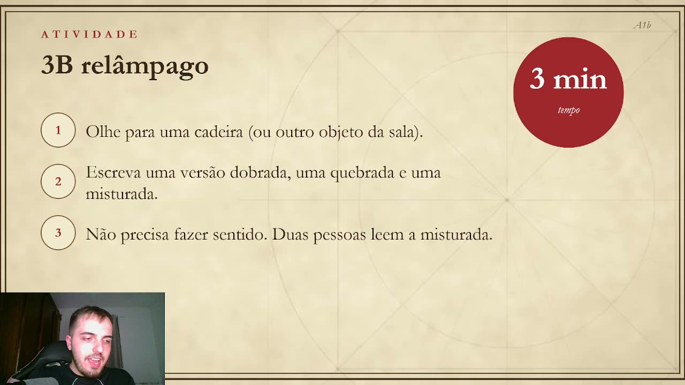
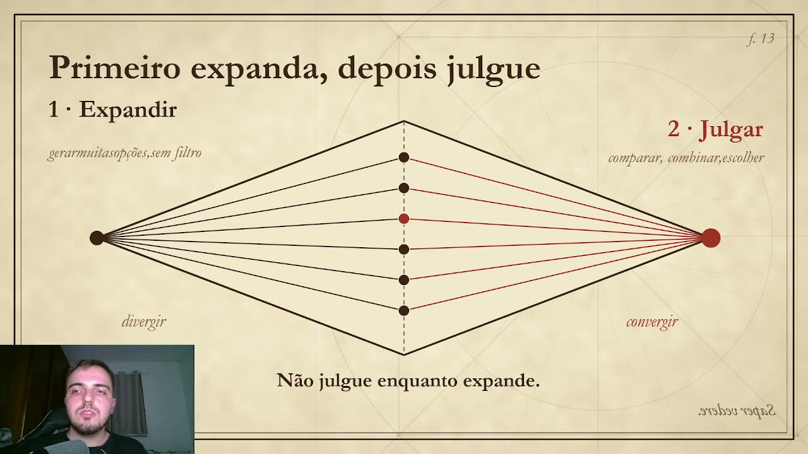
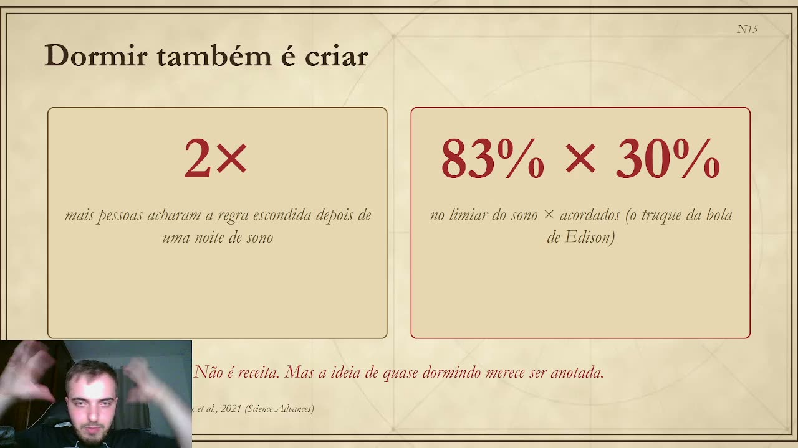

<title>Criar é um Ato · Fabricyo Dias</title>
<meta name="claude:viewport-fit-sides" content="cover">
<meta name="description" content="Aulas, palestras e oficinas que ensinam qualquer pessoa a ter ideias melhores, com base no que a neurociência sabe sobre o cérebro criativo. Com Fabricyo Dias.">
<link rel="preconnect" href="https://fonts.googleapis.com">
<link rel="preconnect" href="https://fonts.gstatic.com" crossorigin>
<link href="https://fonts.googleapis.com/css2?family=EB+Garamond:ital,wght@0,400;0,500;0,600;0,700;0,800;1,400;1,500;1,600&display=swap" rel="stylesheet">
<style>
  /* Layout: a página é um caderno de folhas de pergaminho com moldura dupla, como os slides da palestra.
     Visual único e deliberado (pergaminho claro), por isso sem tema escuro. */
  :root{
    --desk:#e3cfa3;        /* mesa atrás das folhas */
    --sheet:#f3e8ce;       /* folha */
    --sheet-2:#ead9b2;     /* pílula / caixa */
    --ink:#3a2817;         /* tinta principal */
    --ink-2:#4f3b22;       /* tinta secundária */
    --ink-3:#6a5434;       /* legenda */
    --rule:#bfa77b;        /* linhas de construção */
    --red:#a8322a;         /* vermelho dos slides */
    --red-ink:#fbf3e2;
    --red-hover:#8a241d;
    --garamond:"EB Garamond", Garamond, "Times New Roman", serif;
    color-scheme:light;
  }
  @property --p{syntax:"<number>";inherits:false;initial-value:0}

  *{box-sizing:border-box;margin:0;padding:0}
  html{scroll-behavior:smooth;-webkit-text-size-adjust:100%}
  body{
    background:var(--desk) url("img/papel.png");
    color:var(--ink);font-family:var(--garamond);font-size:21px;line-height:1.5;
    -webkit-font-smoothing:antialiased;text-rendering:optimizeLegibility;
  }
  body::before{content:"";position:fixed;inset:0 0 auto;height:env(safe-area-inset-top,0px);z-index:30;background:var(--sheet)}
  a{color:inherit}
  img,svg{display:block;max-width:100%}
  h1,h2,h3{text-wrap:balance;font-weight:700;letter-spacing:-.005em}
  :focus-visible{outline:2px solid var(--red);outline-offset:3px}
  ::selection{background:var(--red);color:var(--red-ink)}

  /* ---------- NAV ---------- */
  .nav{position:sticky;top:env(safe-area-inset-top,0px);z-index:20;background:var(--sheet);border-bottom:1px solid var(--rule);
       padding-left:max(16px,env(safe-area-inset-left,0px));padding-right:max(16px,env(safe-area-inset-right,0px))}
  .nav-in{max-width:1240px;margin:0 auto;display:flex;align-items:center;justify-content:space-between;gap:16px;height:64px}
  .brand{font-weight:800;font-size:22px;text-decoration:none;letter-spacing:.02em;white-space:nowrap;text-transform:uppercase}
  .brand span{color:var(--red)}
  .nav ul{display:flex;align-items:center;gap:26px;list-style:none}
  .nav ul a{text-decoration:none;font-size:18px;color:var(--ink-2);font-style:italic}
  .nav ul a:hover{color:var(--red)}

  /* ---------- PÍLULAS (botões dos slides) ---------- */
  .pill{display:inline-flex;align-items:center;justify-content:center;gap:10px;min-height:52px;padding:10px 28px;border-radius:999px;
        border:1.5px solid var(--ink-2);background:var(--sheet-2);color:var(--ink);font-family:var(--garamond);font-weight:700;font-size:20px;
        text-decoration:none;cursor:pointer;transition:transform .25s cubic-bezier(.2,.8,.2,1),background .25s,color .25s,border-color .25s}
  .pill:hover{transform:translateY(-2px);border-color:var(--ink)}
  .pill.red{background:var(--red);border-color:var(--red);color:var(--red-ink)}
  .pill.red:hover{background:var(--red-hover);border-color:var(--red-hover)}
  .hand .dot{fill:var(--red)}
  .nav .pill{min-height:40px;padding:6px 18px;font-size:16px;font-style:normal}
  .nav .pill .short{display:none}

  /* ---------- FOLHAS ---------- */
  .desk{padding:28px max(16px,env(safe-area-inset-right,0px)) 40px max(16px,env(safe-area-inset-left,0px));display:grid;gap:28px}
  .sheet{position:relative;max-width:1240px;width:100%;margin:0 auto;background:var(--sheet) url("img/papel.png");
         box-shadow:0 1px 0 rgba(58,40,23,.08),0 18px 40px -28px rgba(58,40,23,.45);
         padding:clamp(48px,7vw,96px) clamp(22px,6vw,88px);scroll-margin-top:84px;overflow:hidden}
  .sheet::before,.sheet::after{content:"";position:absolute;pointer-events:none;border:1px solid var(--ink-2)}
  .sheet::before{inset:12px;opacity:.55}
  .sheet::after{inset:17px;opacity:.3}
  /* Folhas alternadas: cada uma redefine as mesmas variáveis, então todos os componentes se adaptam */
  .sheet{color:var(--ink)}
  .t-red{--sheet:#a8322a;--sheet-2:#922a23;--ink:#fdf5e6;--ink-2:#f6e2cc;--ink-3:#eccbb2;--rule:rgba(253,245,230,.38);
         --red:#f2d39b;--red-ink:#4a1510;--red-hover:#f9e4bd}
  .t-dark{--sheet:#2e1f11;--sheet-2:#402c18;--ink:#f6ecd4;--ink-2:#e2d1ad;--ink-3:#c4ad83;--rule:#6a5236;
          --red:#e66a52;--red-ink:#2a160c;--red-hover:#f08670}
  .t-kraft{--sheet:#e4cc9a;--sheet-2:#f3e8ce;--rule:#b39765}
  .t-red .pill:not(.red),.t-dark .pill:not(.red){background:transparent}
  .t-red .pill[aria-pressed="true"]{background:#fdf5e6;border-color:#fdf5e6;color:#7d221c}
  .folio{position:absolute;top:26px;right:34px;font-style:italic;font-size:15px;color:var(--ink-3)}
  .mirror{position:absolute;bottom:24px;right:34px;font-style:italic;font-size:16px;color:var(--ink-3);transform:scaleX(-1);opacity:.85}
  .mirror.l{right:auto;left:34px}
  .construct{position:absolute;pointer-events:none;stroke:var(--rule);fill:none;opacity:.55}
  .kicker{font-size:15px;letter-spacing:.42em;text-transform:uppercase;font-weight:600;color:var(--red)}
  .h2{font-size:clamp(36px,4.6vw,58px);line-height:1.04;margin-top:14px}
  .h2 em{font-style:italic;font-weight:500;color:var(--red)}
  .intro{font-size:22px;color:var(--ink-2);max-width:640px;margin-top:18px}
  .note{font-style:italic;color:var(--red);font-size:19px}
  .cite{font-style:italic;font-size:15px;color:var(--ink-3);margin-top:14px}
  .measure{max-width:1060px;margin:0 auto;position:relative}

  /* ---------- HERO ---------- */
  .hero{padding-top:clamp(56px,8vw,110px);padding-bottom:clamp(56px,7vw,96px)}
  .hero-grid{display:grid;grid-template-columns:1.2fr .8fr;gap:clamp(32px,5vw,72px);align-items:center;position:relative}
  .hero-grid > *{min-width:0}
  .hero h1{font-size:clamp(58px,9.4vw,132px);line-height:.9;font-weight:800;text-transform:uppercase;letter-spacing:-.01em}
  .hero h1 .ato{color:var(--red)}
  .hero h1 span{display:inline-block;animation:rise .9s cubic-bezier(.2,.8,.2,1) both}
  .hero h1 span:nth-child(2){animation-delay:.08s}
  .hero h1 span:nth-child(4){animation-delay:.16s}
  .hero h1 span:nth-child(5){animation-delay:.24s}
  .q{font-style:italic;font-size:clamp(24px,2.4vw,30px);color:var(--red);margin-top:18px;letter-spacing:.06em}
  .lede{font-size:clamp(21px,2vw,24px);max-width:560px;margin-top:22px;color:var(--ink)}
  .lede b{font-weight:700}
  .ctas{display:flex;flex-wrap:wrap;gap:14px;margin-top:34px}
  .compass{width:120px;height:120px;margin-top:30px}
  .compass .leg{stroke:var(--ink);stroke-width:2.2;fill:none;stroke-linecap:round}
  .compass .arc{stroke:var(--red);stroke-width:2;fill:none;stroke-dasharray:4 5}
  .compass .swing{transform-origin:60px 22px;animation:swing 5s ease-in-out infinite}

  .portrait{position:relative;width:min(100%,420px);margin:0 auto;aspect-ratio:4/5}
  .portrait .oval{position:absolute;inset:0;border-radius:50%;overflow:hidden;border:2px solid var(--ink);box-shadow:0 0 0 7px var(--sheet),0 0 0 8.5px var(--ink-2);background:#0e0d0c}
  .portrait img{width:100%;height:100%;object-fit:cover;object-position:50% 30%;transform:scale(1.04);animation:settle 1.4s cubic-bezier(.2,.8,.2,1) both}
  .portrait .ring{position:absolute;inset:-34px;width:calc(100% + 68px);height:calc(100% + 68px);max-width:none;overflow:visible}
  .portrait .ring ellipse{fill:none;stroke:var(--rule);stroke-width:1}
  .portrait .ring .red{stroke:var(--red);stroke-width:2;stroke-dasharray:6 8;animation:spin 60s linear infinite;transform-origin:50% 50%;transform-box:view-box}
  .portrait figcaption{position:absolute;left:50%;bottom:-30px;transform:translateX(-50%);white-space:nowrap;font-style:italic;font-size:17px;color:var(--ink-2);background:var(--sheet);padding:2px 14px}

  /* ---------- PERGUNTA ---------- */
  .ask{display:grid;grid-template-columns:1fr 1fr;gap:clamp(32px,5vw,72px);align-items:center}
  .ask > *{min-width:0}
  .choices{display:flex;flex-wrap:wrap;gap:16px;margin-top:34px}
  .choices .pill{min-width:150px;font-size:24px;min-height:62px}
  .choices .pill[aria-pressed="true"]{background:var(--red);border-color:var(--red);color:var(--red-ink)}
  .hand{display:flex;align-items:center;gap:12px;margin-top:22px;font-weight:600;font-size:18px;color:var(--ink-2)}
  .hand svg{width:30px;height:24px;flex:none}
  .answer{border-left:2px solid var(--red);padding:6px 0 6px 28px}
  .answer .big{font-size:clamp(30px,3.4vw,44px);line-height:1.08;font-weight:700}
  .answer .big em{color:var(--red);font-style:italic;font-weight:500}
  .answer p{margin-top:16px;color:var(--ink-2)}
  .answer.swap{animation:fadeup .45s cubic-bezier(.2,.8,.2,1)}

  .how{display:grid;grid-template-columns:repeat(3,1fr);gap:clamp(20px,3vw,40px);margin-top:clamp(56px,7vw,88px);padding-top:clamp(40px,5vw,56px);border-top:1px solid var(--rule)}
  .how > div{min-width:0}
  .num{width:52px;height:52px;border-radius:50%;border:1.5px solid var(--ink);display:grid;place-items:center;font-weight:600;font-size:19px;background:var(--sheet)}
  .how h3{font-size:28px;margin-top:18px}
  .how p{color:var(--ink-2);margin-top:8px;font-size:20px}

  /* ---------- AULA ---------- */
  .aula{display:grid;grid-template-columns:1.35fr .65fr;gap:clamp(28px,4vw,56px);align-items:center;margin-top:44px}
  .aula > *{min-width:0}
  .player{position:relative;display:block;text-decoration:none;border:1.5px solid var(--ink-2);padding:10px;background:var(--sheet-2)}
  .player .frame{position:relative;overflow:hidden;aspect-ratio:16/9}
  .player img{width:100%;height:100%;object-fit:cover;transition:transform .8s cubic-bezier(.2,.8,.2,1)}
  .player:hover img{transform:scale(1.035)}
  .play{position:absolute;inset:0;display:grid;place-items:center}
  .play i{width:76px;height:76px;border-radius:50%;background:var(--red);display:grid;place-items:center;box-shadow:0 0 0 10px rgba(168,50,42,.18);transition:transform .35s cubic-bezier(.2,.8,.2,1),box-shadow .35s}
  .play i::after{content:"";border-left:22px solid var(--red-ink);border-top:13px solid transparent;border-bottom:13px solid transparent;margin-left:6px}
  .player:hover .play i{transform:scale(1.08);box-shadow:0 0 0 16px rgba(168,50,42,.16)}
  @media (hover:hover){
    .play{background:rgba(30,20,10,0);transition:background .35s}
    .play i{opacity:0;transform:scale(.8)}
    .player:hover .play,.player:focus-visible .play{background:rgba(30,20,10,.28)}
    .player:hover .play i,.player:focus-visible .play i{opacity:1;transform:scale(1)}
  }
  @media (hover:none){ .play{place-items:end;padding:12px} }
  .aula-side h3{font-size:30px;line-height:1.12}
  .aula-side p{color:var(--ink-2);margin-top:12px}
  .facts{list-style:none;margin-top:20px;border-top:1px solid var(--rule)}
  .facts li{display:flex;justify-content:space-between;gap:14px;padding:10px 0;border-bottom:1px solid var(--rule);font-size:18px}
  .facts li span{font-style:italic;color:var(--ink-2)}
  .facts li b{text-align:right}
  .aula-side .pill{margin-top:22px}
  .strip{display:grid;grid-template-columns:repeat(3,1fr);gap:clamp(14px,2vw,24px);margin-top:clamp(36px,5vw,56px)}
  .strip figure{min-width:0;border:1px solid var(--rule);padding:8px;background:var(--sheet);transition:transform .45s cubic-bezier(.2,.8,.2,1)}
  .strip figure:hover{transform:translateY(-4px) rotate(-.4deg)}
  .strip img{width:100%;aspect-ratio:16/9;object-fit:cover}
  .strip figcaption{font-size:17px;margin-top:10px;color:var(--ink-2);font-style:italic}
  .strip figcaption b{font-style:normal;color:var(--ink);display:block;font-size:19px}

  /* ---------- IA / CONSTELAÇÃO ---------- */
  .ia{display:grid;grid-template-columns:1fr 1fr;gap:clamp(28px,5vw,64px);align-items:center}
  .ia > *{min-width:0}
  .stars{width:100%;max-width:520px;margin:0 auto}
  .stars line{stroke:var(--rule);stroke-width:1}
  .stars circle{fill:var(--ink)}
  .stars .path{fill:none;stroke:var(--red);stroke-width:3;stroke-linecap:round;stroke-linejoin:round;stroke-dasharray:640;stroke-dashoffset:0;transition:stroke-dashoffset 2.6s cubic-bezier(.6,.1,.2,1)}
  .stars .hot{fill:var(--red);transition:transform .5s cubic-bezier(.2,.8,.2,1);transform-box:fill-box;transform-origin:center}
  .js .stars:not(.in) .path{stroke-dashoffset:640}
  .js .stars:not(.in) .hot{transform:scale(.3)}
  .twocol{display:grid;grid-template-columns:1fr 1fr;gap:16px;margin-top:28px}
  .box{border:1.5px solid var(--ink-2);border-radius:14px;padding:18px 20px;background:var(--sheet-2)}
  .box b{display:block;font-size:19px}
  .box b.up{color:var(--ink)}
  .box b.down{color:var(--red)}
  .box p{font-style:italic;font-size:18px;color:var(--ink-2);margin-top:6px;line-height:1.35}
  .ia .punch{font-size:clamp(28px,3vw,38px);line-height:1.12;margin-top:26px;font-weight:700}
  .ia .punch em{color:var(--red);font-style:italic;font-weight:500}

  /* ---------- TRAJETÓRIA ---------- */
  .wave{width:100%;margin-top:44px;overflow:visible}
  .wave .track{fill:none;stroke:var(--ink-2);stroke-width:1.6;stroke-dasharray:6 7}
  .wave .reveal{fill:none;stroke:#fff;stroke-width:12;stroke-dasharray:1200;stroke-dashoffset:0;transition:stroke-dashoffset 2.8s cubic-bezier(.5,.1,.2,1)}
  .js .wave:not(.in) .reveal{stroke-dashoffset:1200}
  .wave .node circle{fill:var(--sheet);stroke:var(--ink);stroke-width:1.6}
  .wave .node text{font-family:var(--garamond);font-size:17px;fill:var(--ink);text-anchor:middle;dominant-baseline:central}
  .wave .node .lbl{font-size:21px;font-weight:600}
  .wave .node.last circle{fill:var(--red);stroke:var(--red)}
  .wave .node.last .rn{fill:var(--red-ink)}
  .wave .node.last .lbl{fill:var(--red)}
  .wave .node{transition:transform .6s cubic-bezier(.2,.8,.2,1),opacity .6s;transform-box:fill-box;transform-origin:center}
  .js .wave:not(.in) .node{opacity:.25}
  .wave .node:nth-of-type(2){transition-delay:.35s}.wave .node:nth-of-type(3){transition-delay:.7s}
  .wave .node:nth-of-type(4){transition-delay:1.05s}.wave .node:nth-of-type(5){transition-delay:1.4s}
  .wave .node:nth-of-type(6){transition-delay:1.75s}.wave .node:nth-of-type(7){transition-delay:2.1s}
  .wave-cap{text-align:center;margin-top:18px}
  .trail-list{display:none;list-style:none;margin-top:30px;counter-reset:t}
  .trail-list li{display:flex;align-items:center;gap:14px;padding:10px 0;border-bottom:1px dashed var(--rule);font-weight:600}
  .trail-list li i{width:40px;height:40px;border-radius:50%;border:1.5px solid var(--ink);display:grid;place-items:center;font-style:normal;font-weight:500;font-size:16px;flex:none}
  .trail-list li.last{color:var(--red)}
  .trail-list li.last i{background:var(--red);border-color:var(--red);color:var(--red-ink)}

  /* ---------- OFICINA ---------- */
  .of-top{display:grid;grid-template-columns:1fr auto;gap:40px;align-items:end}
  .of-top > *{min-width:0}
  .watch{width:170px;flex:none}
  .watch .dial{position:relative;width:170px;height:170px;border-radius:50%;border:5px solid var(--ink);
               background:conic-gradient(var(--red) calc(var(--p) * 1%), transparent 0);animation:tick 12s linear infinite}
  .watch .dial::before{content:"";position:absolute;left:50%;top:-22px;width:26px;height:16px;transform:translateX(-50%);background:var(--ink);border-radius:2px}
  .watch .dial::after{content:"30 s";position:absolute;inset:0;display:grid;place-items:center;font-weight:700;font-size:26px}
  .watch .face{position:absolute;inset:14px;border-radius:50%;background:var(--sheet);opacity:.0}
  .ticks{position:absolute;inset:0}
  .steps{display:grid;grid-template-columns:repeat(5,1fr);gap:clamp(12px,1.6vw,20px);margin-top:48px;position:relative}
  .steps::before{content:"";position:absolute;left:26px;right:26px;top:26px;border-top:1.6px dashed var(--ink-2)}
  .step{position:relative;min-width:0}
  .step .num{position:relative}
  .step h3{font-size:25px;margin-top:16px}
  .step .what{font-style:italic;color:var(--ink-2);font-size:17px}
  .act{margin-top:14px;border:1.5px solid var(--ink-2);border-radius:14px;padding:14px;background:var(--sheet-2);font-size:17px;line-height:1.35}
  .act small{display:block;font-size:12px;letter-spacing:.3em;text-transform:uppercase;color:var(--red);font-weight:700;margin-bottom:6px}
  .step:last-child .num{background:var(--red);border-color:var(--red);color:var(--red-ink)}
  .meta-row{display:flex;flex-wrap:wrap;gap:12px;margin-top:40px}
  .tag{border:1.5px solid var(--ink-2);border-radius:999px;padding:8px 18px;font-size:18px;background:var(--sheet)}
  .tag b{color:var(--red)}

  /* ---------- PALESTRAS ---------- */
  .talks{display:grid;grid-template-columns:repeat(3,1fr);gap:clamp(16px,2vw,26px);margin-top:44px}
  .talk{position:relative;border:1.5px solid var(--ink-2);padding:30px 26px 24px;background:var(--sheet);display:flex;flex-direction:column;min-width:0;transition:transform .45s cubic-bezier(.2,.8,.2,1),box-shadow .45s}
  .talk:hover{transform:translateY(-6px);box-shadow:0 22px 36px -26px rgba(58,40,23,.55)}
  .talk::after{content:"";position:absolute;inset:5px;border:1px solid var(--rule);pointer-events:none}
  .talk .for{font-size:13px;letter-spacing:.32em;text-transform:uppercase;color:var(--red);font-weight:700}
  .talk h3{font-size:28px;line-height:1.08;margin-top:12px}
  .talk h3 em{font-weight:500;color:var(--ink-2)}
  .talk p{color:var(--ink-2);margin-top:12px;flex:1;font-size:19px}
  .talk .t{margin-top:18px;font-style:italic;font-size:17px;color:var(--ink-3)}

  /* ---------- MITOS ---------- */
  .myths{display:grid;grid-template-columns:repeat(3,1fr);gap:clamp(16px,2.4vw,32px);margin-top:44px}
  .myth{min-width:0;border-top:1.5px solid var(--ink);padding-top:18px}
  .myth .m{font-size:21px;color:var(--ink-3);text-decoration:line-through;text-decoration-color:var(--red);text-decoration-thickness:2px}
  .myth .t{font-size:25px;font-weight:700;line-height:1.18;margin-top:8px}
  .myth small{display:block;font-style:italic;font-size:15px;color:var(--ink-3);margin-top:10px}

  /* ---------- SOBRE ---------- */
  .about{display:grid;grid-template-columns:.75fr 1.25fr;gap:clamp(36px,5vw,72px);align-items:start}
  .about > *{min-width:0}
  .about .portrait{width:min(100%,340px)}
  .about h2{font-size:clamp(40px,5vw,60px);line-height:1}
  .role{font-style:italic;color:var(--red);font-size:22px;margin-top:8px}
  .about p{color:var(--ink-2);margin-top:18px}
  .cols{display:grid;grid-template-columns:1fr 1fr;gap:28px;margin-top:34px}
  .cols > div{min-width:0}
  .cols h4{font-size:13px;letter-spacing:.32em;text-transform:uppercase;color:var(--red);font-weight:700;padding-bottom:8px;border-bottom:1.5px solid var(--ink)}
  .cols ul{list-style:none}
  .cols li{padding:10px 0;border-bottom:1px solid var(--rule);font-size:18px;line-height:1.3}
  .cols li b{display:block;font-weight:600}
  .cols li span{font-style:italic;color:var(--ink-2);font-size:16px}
  .links{display:flex;flex-wrap:wrap;gap:10px;margin-top:30px}
  .links .pill{min-height:42px;font-size:17px;padding:6px 18px}
  .links .pill::after{content:"↗";color:var(--red)}

  /* ---------- CONTATO ---------- */
  .contact{text-align:center}
  .contact h2{font-size:clamp(40px,6vw,84px);line-height:1;max-width:900px;margin:14px auto 0}
  .contact h2 em{color:var(--red);font-style:italic;font-weight:500}
  .contact .intro{margin:20px auto 0}
  .contact .ctas{justify-content:center}
  .mail{display:inline-flex;align-items:center;gap:12px;margin-top:26px;font-size:20px;flex-wrap:wrap;justify-content:center}
  .mail code{font-family:var(--garamond);font-style:italic;user-select:all}
  .mail button{font:inherit;font-size:15px;border:1px solid var(--ink-2);background:transparent;border-radius:999px;padding:4px 14px;cursor:pointer;color:var(--ink)}
  footer{text-align:center;padding:10px 16px 40px;font-style:italic;font-size:16px;color:var(--ink-2)}

  /* ---------- MOTION ---------- */
  @keyframes rise{from{transform:translateY(26px)}to{transform:none}}
  @keyframes settle{from{transform:scale(1.12)}to{transform:scale(1.04)}}
  @keyframes swing{0%,100%{transform:rotate(-7deg)}50%{transform:rotate(7deg)}}
  @keyframes spin{to{transform:rotate(360deg)}}
  @keyframes tick{from{--p:0}to{--p:100}}
  @keyframes fadeup{from{opacity:.2;transform:translateY(10px)}to{opacity:1;transform:none}}
  .lift{transition:transform .9s cubic-bezier(.2,.8,.2,1)}
  .js .lift:not(.in){transform:translateY(28px)}
  @media (prefers-reduced-motion:reduce){
    *,*::before,*::after{animation:none!important;transition:none!important}
    .js .lift:not(.in){transform:none}
    .js .stars:not(.in) .path,.js .wave:not(.in) .reveal{stroke-dashoffset:0}
    .js .wave:not(.in) .node{opacity:1}
  }

  /* ---------- RESPONSIVO ---------- */
  .nav .pill{white-space:nowrap}
  .nav ul a{white-space:nowrap}
  @media (max-width:1000px){
    .nav ul li:not(:last-child){display:none}
    .hero-grid,.ask,.ia,.about,.aula{grid-template-columns:1fr}
    .portrait{width:min(78%,360px)}
    .steps{grid-template-columns:1fr 1fr}
    .steps::before{display:none}
    .talks,.myths{grid-template-columns:1fr}
    .how{grid-template-columns:1fr}
  }
  @media (max-width:760px){
    body{font-size:19px}
    .nav ul li:not(:last-child){display:none}
    .nav .pill .long{display:none}.nav .pill .short{display:inline}
    .desk{padding-top:14px;gap:16px}
    .sheet::before{inset:8px}.sheet::after{inset:12px}
    .folio{top:18px;right:24px}.mirror{right:24px;bottom:16px}
    .wave{display:none}.trail-list{display:block}
    .of-top{grid-template-columns:1fr}
    .watch{width:130px}.watch .dial{width:130px;height:130px}.watch .dial::after{font-size:21px}
    .steps{grid-template-columns:1fr}
    .strip{grid-template-columns:1fr}
    .cols,.twocol{grid-template-columns:1fr}
    .choices{gap:10px}
    .choices .pill{min-width:0;flex:1 1 0;font-size:20px;padding:8px 10px;min-height:54px}
    .ctas .pill{flex:1 1 100%}
    .hero h1{font-size:clamp(50px,15vw,80px)}
    .portrait{width:min(74%,300px);margin-top:20px}
    .portrait figcaption{bottom:-36px}
    .play i{width:60px;height:60px}
    .play i::after{border-left-width:18px;border-top-width:11px;border-bottom-width:11px}
    .meta-row .tag{font-size:16px;padding:6px 14px}
    .talk{padding:26px 20px 20px}
    .contact h2{font-size:clamp(36px,10vw,56px)}
    .mirror{display:none}
    .compass{display:none}
  }
  @media (min-width:761px) and (max-width:1000px){
    .steps{grid-template-columns:repeat(3,1fr)}
    .talks{grid-template-columns:1fr 1fr}
    .myths{grid-template-columns:1fr 1fr}
    .talk:last-child,.myth:last-child{grid-column:1 / -1}
    .how{grid-template-columns:repeat(3,1fr)}
    .ia .stars{max-width:440px}
    .hero-grid{text-align:left}
  }
  @media (max-width:380px){
    .sheet{padding-left:18px;padding-right:18px}
    .choices .pill{font-size:18px}
    .brand{font-size:19px}
  }
</style>

<header class="nav">
  <div class="nav-in">
    <a class="brand" href="#topo">Criar é um Ato<span>.</span></a>
    <ul>
      <li><a href="#aula">A aula</a></li>
      <li><a href="#oficina">Oficina</a></li>
      <li><a href="#palestras">Palestras</a></li>
      <li><a href="#sobre">Quem sou</a></li>
      <li><a class="pill red" href="#contato"><span class="long">Levar para minha instituição</span><span class="short">Contato</span></a></li>
    </ul>
  </div>
</header>

<main class="desk" id="topo">

  <!-- f.1 HERO -->
  <section class="sheet hero">
    <span class="folio">f. 1</span>
    <svg class="construct" style="right:-120px;top:-140px;width:620px;height:620px" viewBox="0 0 620 620" aria-hidden="true">
      <circle cx="310" cy="310" r="300"/><circle cx="310" cy="310" r="210"/><line x1="10" y1="310" x2="610" y2="310"/><line x1="310" y1="10" x2="310" y2="610"/><line x1="98" y1="98" x2="522" y2="522"/>
    </svg>
    <div class="hero-grid measure">
      <div>
        <h1><span>Criar</span> <span>é</span><br><span>um</span> <span class="ato">ato.</span></h1>
        <p class="q">Como o cérebro cria?</p>
        <p class="lede">Aulas, palestras e oficinas que ensinam <b>qualquer pessoa a ter ideias melhores</b>, com exercícios práticos e com o que a neurociência já descobriu sobre o cérebro criativo.</p>
        <div class="ctas">
          <a class="pill red" href="#aula">▶&nbsp; Assistir a uma aula</a>
          <a class="pill" href="#contato">Levar para minha faculdade</a>
        </div>
        <svg class="compass" viewBox="0 0 120 120" aria-hidden="true">
          <path class="arc" d="M18 104 Q60 120 102 104"/>
          <circle class="leg" cx="60" cy="16" r="6"/>
          <g class="swing"><path class="leg" d="M60 22 L34 102"/><path class="leg" d="M60 22 L86 102"/></g>
        </svg>
      </div>
      <figure class="portrait">
        <svg class="ring" viewBox="0 0 488 588" aria-hidden="true"><ellipse cx="244" cy="294" rx="238" ry="288"/><ellipse class="red" cx="244" cy="294" rx="224" ry="274"/></svg>
        <div class="oval"></div>
        <figcaption>Fabricyo Dias</figcaption>
      </figure>
    </div>
    <span class="mirror">Saper vedere.</span>
  </section>

  <!-- f.2 PERGUNTA (o que é, para um leigo) -->
  <section class="sheet t-red">
    <span class="folio">f. 2</span>
    <div class="measure">
      <div class="ask lift">
        <div>
          <p class="kicker">Comece por aqui</p>
          <h2 class="h2">Você é uma pessoa criativa?</h2>
          <div class="choices" role="group" aria-label="Escolha uma resposta">
            <button class="pill" type="button" data-a="sim" aria-pressed="false" id="op-sim">Sim</button>
            <button class="pill" type="button" data-a="nao" aria-pressed="false" id="op-nao">Não</button>
            <button class="pill" type="button" data-a="dep" aria-pressed="true" id="op-dep">Depende</button>
          </div>
          <p class="hand"><svg viewBox="0 0 30 24" aria-hidden="true"><path d="M2 2h26v15H12l-6 5v-5H2z" fill="none" stroke="currentColor" stroke-width="1.6"/><circle class="dot" cx="10" cy="9.5" r="1.4"/><circle class="dot" cx="15" cy="9.5" r="1.4"/><circle class="dot" cx="20" cy="9.5" r="1.4"/></svg>É assim que a aula começa: com o público respondendo.</p>
        </div>
        <div class="answer" id="answer" aria-live="polite">
          <p class="big">A resposta é: <em>depende.</em><br>Do quanto você pratica.</p>
          <p>Criatividade não é um dom que alguns têm e outros não. É um processo que todo cérebro faz e que melhora com treino. A aula mostra como esse processo funciona e treina cada etapa na prática.</p>
        </div>
      </div>

      <div class="how lift">
        <div><span class="num">I</span><h3>Entender</h3><p>Como o cérebro gera ideias, explicado de um jeito simples e sem mitos como “o lado direito do cérebro”.</p></div>
        <div><span class="num">II</span><h3>Praticar</h3><p>Exercícios cronometrados, de 30 segundos a 15 minutos, feitos ali mesmo, em sala, sozinho ou em grupo.</p></div>
        <div><span class="num">III</span><h3>Levar junto</h3><p>Um método de cinco passos para usar em qualquer trabalho, projeto ou desafio do dia a dia.</p></div>
      </div>
    </div>
    <span class="mirror">Criar é provocar conexões.</span>
  </section>

  <!-- f.3 AULA -->
  <section class="sheet" id="aula">
    <span class="folio">f. 3</span>
    <div class="measure">
      <p class="kicker">Veja antes de convidar</p>
      <h2 class="h2">Uma aula completa, <em>do começo ao fim.</em></h2>
      <div class="aula">
        <a class="player lift" href="https://youtu.be/urotu8m_BFY" target="_blank" rel="noopener" aria-label="Assistir à webclass Criar é um Ato no YouTube">
          <div class="frame">
            
            <span class="play"><i></i></span>
          </div>
        </a>
        <div class="aula-side">
          <h3>Criar é um Ato · webclass para a SP Talks</h3>
          <p>Os mitos, o que acontece no cérebro, o papel do sono e da pausa, e o que muda com a IA. Com exercícios que o público faz durante a aula.</p>
          <ul class="facts">
            <li><span>Duração</span><b>cerca de 70 min</b></li>
            <li><span>Formato</span><b>Ao vivo, online</b></li>
            <li><span>Onde assistir</span><b>YouTube</b></li>
          </ul>
          <a class="pill red" href="https://youtu.be/urotu8m_BFY" target="_blank" rel="noopener">▶&nbsp; Assistir no YouTube</a>
        </div>
      </div>
      <div class="strip">
        <figure class="lift"><figcaption><b>3B relâmpago</b>3 minutos para transformar um objeto qualquer.</figcaption></figure>
        <figure class="lift"><figcaption><b>Primeiro expanda, depois julgue</b>Ter muitas ideias antes de escolher uma.</figcaption></figure>
        <figure class="lift"><figcaption><b>Dormir também é criar</b>O que o sono faz pelas ideias, tema da minha pesquisa.</figcaption></figure>
      </div>
    </div>
  </section>

  <!-- f.4 IA -->
  <section class="sheet t-dark">
    <span class="folio">f. 4</span>
    <div class="measure ia">
      <div>
        <p class="kicker">Por que isso importa agora</p>
        <h2 class="h2">Criatividade é <em>conexão.</em></h2>
        <p class="intro">Uma ideia nova quase nunca é um ponto novo. É uma linha nova entre pontos que você já tinha: o que viu, leu, viveu.</p>
        <div class="twocol">
          <div class="box"><b class="up">▲ Com IA, cada texto melhora</b><p>Textos feitos com ajuda de IA foram avaliados como mais criativos.</p></div>
          <div class="box"><b class="down">▼ Mas todos ficam parecidos</b><p>Os textos feitos com IA ficaram mais iguais entre si.</p></div>
        </div>
        <p class="cite">Estudo de Doshi &amp; Hauser, publicado em 2024 na revista Science Advances.</p>
        <p class="punch">A IA tem o repertório de todo mundo. <em>A sua conexão, só você tem.</em></p>
      </div>
      <svg class="stars" data-watch viewBox="0 0 500 420" role="img" aria-label="Pontos ligados por linhas finas, e uma linha vermelha criando um caminho novo entre eles">
        <g>
          <line x1="40" y1="90" x2="130" y2="60"/><line x1="130" y1="60" x2="210" y2="120"/><line x1="210" y1="120" x2="300" y2="70"/><line x1="300" y1="70" x2="400" y2="110"/>
          <line x1="400" y1="110" x2="460" y2="40"/><line x1="40" y1="90" x2="90" y2="200"/><line x1="90" y1="200" x2="60" y2="320"/><line x1="60" y1="320" x2="170" y2="380"/>
          <line x1="170" y1="380" x2="280" y2="350"/><line x1="280" y1="350" x2="390" y2="390"/><line x1="390" y1="390" x2="460" y2="300"/><line x1="460" y1="300" x2="430" y2="200"/>
          <line x1="430" y1="200" x2="400" y2="110"/><line x1="210" y1="120" x2="240" y2="230"/><line x1="240" y1="230" x2="340" y2="250"/><line x1="340" y1="250" x2="430" y2="200"/>
          <line x1="90" y1="200" x2="160" y2="260"/><line x1="160" y1="260" x2="280" y2="350"/>
        </g>
        <polyline class="path" points="60,320 160,260 240,230 340,250 400,110 460,40"/>
        <g>
          <circle cx="40" cy="90" r="5"/><circle cx="130" cy="60" r="5"/><circle cx="210" cy="120" r="5"/><circle cx="300" cy="70" r="5"/>
          <circle cx="90" cy="200" r="5"/><circle cx="170" cy="380" r="5"/><circle cx="280" cy="350" r="5"/><circle cx="390" cy="390" r="5"/>
          <circle cx="460" cy="300" r="5"/><circle cx="430" cy="200" r="5"/>
          <circle class="hot" cx="60" cy="320" r="8"/><circle class="hot" cx="160" cy="260" r="8"/><circle class="hot" cx="240" cy="230" r="8"/>
          <circle class="hot" cx="340" cy="250" r="8"/><circle class="hot" cx="400" cy="110" r="8"/><circle class="hot" cx="460" cy="40" r="8"/>
        </g>
      </svg>
    </div>
    <span class="mirror l">repertório + uma linha nova = ideia</span>
  </section>

  <!-- f.5 OFICINA -->
  <section class="sheet t-kraft" id="oficina">
    <span class="folio">f. 5</span>
    <div class="measure">
      <div class="of-top">
        <div>
          <p class="kicker">Oficina prática</p>
          <h2 class="h2">Criatividade na era da IA: <em>como ter ideias que a máquina não tem.</em></h2>
          <p class="intro">Duas horas e meia trabalhando em um problema real, passando pelas cinco etapas do processo criativo. Cada conceito vira um exercício.</p>
        </div>
        <div class="watch" aria-hidden="true"><div class="dial"></div></div>
      </div>

      <div class="steps lift">
        <div class="step"><span class="num">I</span><h3>Repertório</h3><div class="what">o que você acumula</div><div class="act"><small>Atividade</small>Mapa de repertório: seu hobby como modelo para o seu trabalho.</div></div>
        <div class="step"><span class="num">II</span><h3>Conexão</h3><div class="what">o que você relaciona</div><div class="act"><small>Atividade</small>3B relâmpago: dobrar, quebrar e misturar um objeto da sala.</div></div>
        <div class="step"><span class="num">III</span><h3>Exploração</h3><div class="what">o que você testa</div><div class="act"><small>Atividade</small>Brainwriting em grupos: quantidade antes de qualidade.</div></div>
        <div class="step"><span class="num">IV</span><h3>Seleção</h3><div class="what">o que você escolhe</div><div class="act"><small>Atividade</small>Pausa guiada e critérios para não matar a ideia nova.</div></div>
        <div class="step"><span class="num">V</span><h3>Execução</h3><div class="what">o que você entrega</div><div class="act"><small>Atividade</small>Vários protótipos e um plano “se… então” para a semana.</div></div>
      </div>
      <p class="note" style="margin-top:22px">A maioria das pessoas trava entre explorar e executar. A oficina foi desenhada para atravessar essa etapa.</p>

      <div class="meta-row">
        <span class="tag"><b>2h30</b> a 3h</span>
        <span class="tag">até <b>40</b> pessoas</span>
        <span class="tag">presencial ou online</span>
        <span class="tag">semanas acadêmicas · extensão · disciplinas</span>
        <span class="tag">papel, post-its e canetas</span>
      </div>
    </div>
  </section>

  <!-- f.6 PALESTRAS + MITOS -->
  <section class="sheet t-dark" id="palestras">
    <span class="folio">f. 6</span>
    <div class="measure">
      <p class="kicker">Formatos mais curtos</p>
      <h2 class="h2">Palestras</h2>
      <p class="intro">Com dinâmicas para o público participar, ajustadas ao evento.</p>
      <div class="talks">
        <article class="talk lift"><div class="for">Faculdades e eventos</div><h3>Criar é um Ato: <em>como o cérebro cria?</em></h3><p>Para desmontar mitos e mostrar que criatividade é uma habilidade que pode ser treinada.</p><div class="t">60 a 90 min · com dinâmicas</div></article>
        <article class="talk lift"><div class="for">Comunicação e marketing</div><h3>Criatividade na era da IA: <em>a conexão que só você tem</em></h3><p>O que muda quando todo mundo usa as mesmas ferramentas, e como criar ideias que se diferenciam.</p><div class="t">60 min · com dinâmicas</div></article>
        <article class="talk lift"><div class="for">Professores</div><h3>Criatividade em sala de aula: <em>o que a neurociência sugere</em></h3><p>Como estimular o pensamento criativo e a resolução de problemas nos alunos.</p><div class="t">60 a 90 min · formação docente</div></article>
      </div>

      <div class="myths">
        <div class="myth lift"><div class="m">Criatividade é dom.</div><div class="t">É um processo que todo cérebro faz e que pode ser treinado.</div></div>
        <div class="myth lift"><div class="m">Criativo usa o lado direito do cérebro.</div><div class="t">Criar envolve várias áreas do cérebro trabalhando juntas.</div><small>Nielsen et al., 2013 · Beaty et al., 2018</small></div>
        <div class="myth lift"><div class="m">A primeira ideia é a melhor.</div><div class="t">As primeiras costumam ser as óbvias. As melhores vêm depois.</div><small>Lucas &amp; Nordgren, 2015</small></div>
      </div>
    </div>
    <span class="mirror">Quantidade antes de qualidade.</span>
  </section>

  <!-- f.7 SOBRE -->
  <section class="sheet" id="sobre">
    <span class="folio">f. 7</span>
    <div class="measure">
      <p class="kicker">Quem conduz</p>
      <h2 class="h2">Uma trajetória feita de <em>conexões.</em></h2>
      <svg class="wave" data-watch viewBox="0 0 1000 260" role="img" aria-label="Trajetória: Audiovisual, Design, Marketing, Conteúdo, Tecnologia e Neurociência">
        <defs><mask id="m-wave"><path class="reveal" d="M80,80 C165,80 165,180 250,180 S335,80 420,80 S505,180 590,180 S675,80 760,80 S845,180 930,180"/></mask></defs>
        <path class="track" mask="url(#m-wave)" d="M80,80 C165,80 165,180 250,180 S335,80 420,80 S505,180 590,180 S675,80 760,80 S845,180 930,180"/>
        <g class="node"><circle cx="80" cy="80" r="24"/><text class="rn" x="80" y="80">I</text><text class="lbl" x="80" y="34">Audiovisual</text></g>
        <g class="node"><circle cx="250" cy="180" r="24"/><text class="rn" x="250" y="180">II</text><text class="lbl" x="250" y="228">Design</text></g>
        <g class="node"><circle cx="420" cy="80" r="24"/><text class="rn" x="420" y="80">III</text><text class="lbl" x="420" y="34">Marketing</text></g>
        <g class="node"><circle cx="590" cy="180" r="24"/><text class="rn" x="590" y="180">IV</text><text class="lbl" x="590" y="228">Conteúdo</text></g>
        <g class="node"><circle cx="760" cy="80" r="24"/><text class="rn" x="760" y="80">V</text><text class="lbl" x="760" y="34">Tecnologia</text></g>
        <g class="node last"><circle cx="930" cy="180" r="24"/><text class="rn" x="930" y="180">VI</text><text class="lbl" x="930" y="228">Neurociência</text></g>
      </svg>
      <ol class="trail-list">
        <li><i>I</i>Audiovisual</li><li><i>II</i>Design</li><li><i>III</i>Marketing</li><li><i>IV</i>Conteúdo</li><li><i>V</i>Tecnologia</li><li class="last"><i>VI</i>Neurociência</li>
      </ol>
      <p class="note wave-cap">Cada área virou repertório. As ideias nascem nos cruzamentos.</p>

      <div class="about" style="margin-top:clamp(48px,6vw,80px)">
        <figure class="portrait">
          <svg class="ring" viewBox="0 0 488 588" aria-hidden="true"><ellipse cx="244" cy="294" rx="238" ry="288"/><ellipse class="red" cx="244" cy="294" rx="224" ry="274"/></svg>
          <div class="oval"></div>
        </figure>
        <div>
          <h2>Fabricyo Dias</h2>
          <div class="role">Professor e comunicador de ciência · criatividade, cérebro e comportamento</div>
          <p>Passei pelo audiovisual, pelo design, pelo marketing e pela tecnologia até chegar à neurociência. Hoje lidero conteúdo e comunicação como Analista de Marketing Sênior e uso essa experiência de quem precisa colocar ideias no mundo, junto com a pesquisa sobre como o cérebro cria, para ajudar estudantes, educadores e equipes a criar melhor.</p>
          <div class="cols">
            <div>
              <h4>Formação</h4>
              <ul>
                <li><b>Pós-graduação em Neurociências e Comportamento</b><span>PUCRS · 2022</span></li>
                <li><b>Pós-graduação em Neurociências Aplicadas à Educação</b><span>PUCRS · 2024</span></li>
                <li><b>MBA em Comunicação e Marketing</b><span>Cruzeiro do Sul · conclusão em dez/2026</span></li>
                <li><b>Aluno especial, Mestrado em Inovação Tecnológica</b><span>Unifesp · desenvolveu um app educacional</span></li>
                <li><b>Tecnólogo em Produção Audiovisual</b><span>Faculdade Méliès · 2021</span></li>
                <li><b>Técnico em Comunicação Visual</b><span>SENAI Theobaldo de Nigris · 2020</span></li>
              </ul>
            </div>
            <div>
              <h4>Em sala e no palco</h4>
              <ul>
                <li><b>Webclass “Criar é um Ato”</b><span>SP Talks · 2026</span></li>
                <li><b>Palestra “Criar é um Ato”</b><span>FAPCOM</span></li>
                <li><b>Instrutor de Marketing e Design</b><span>Infinity School · 2026</span></li>
                <li><b>Pesquisa sobre sono e criatividade</b><span>TCC em Neurociências e Comportamento</span></li>
              </ul>
            </div>
          </div>
          <div class="links">
            <a class="pill" href="https://www.linkedin.com/in/fabricyo-dias-1706b5293/" target="_blank" rel="noopener">LinkedIn</a>
            <a class="pill" href="https://soulframefotografia.github.io/Portfolio/producao" target="_blank" rel="noopener">Portfólio audiovisual</a>
            <a class="pill" href="https://soulframefotografia.github.io/Portfolio" target="_blank" rel="noopener">Fotografia</a>
            <a class="pill" href="https://instagram.com/diasfabricyo" target="_blank" rel="noopener">Instagram</a>
          </div>
        </div>
      </div>
    </div>
  </section>

  <!-- f.8 CONTATO -->
  <section class="sheet contact t-red" id="contato">
    <span class="folio">f. 8</span>
    <div class="measure">
      <p class="kicker">Próximo passo</p>
      <h2>Vamos levar isso para a <em>sua instituição?</em></h2>
      <p class="intro">Conte o público, a data aproximada e o formato que você imagina. Eu respondo com uma proposta adaptada.</p>
      <div class="ctas">
        <a class="pill red" href="mailto:contato.fabricyodias@gmail.com?subject=Criar%20%C3%A9%20um%20Ato">Enviar e-mail</a>
        <a class="pill" href="https://www.linkedin.com/in/fabricyo-dias-1706b5293/" target="_blank" rel="noopener">Falar pelo LinkedIn</a>
      </div>
      <p class="mail"><code id="mail">contato.fabricyodias@gmail.com</code><button type="button" id="copy">Copiar</button></p>
    </div>
    <span class="mirror">Saper vedere.</span>
  </section>

</main>

<footer>Criar é um Ato · Fabricyo Dias</footer>

<script>
(function(){
  var root=document.documentElement; root.classList.add('js');

  // Revela ao rolar: elementos visíveis no carregamento já entram prontos
  var els=[].slice.call(document.querySelectorAll('.lift,[data-watch]'));
  if(!('IntersectionObserver' in window)){els.forEach(function(e){e.classList.add('in')});}
  else{
    var io=new IntersectionObserver(function(entries){
      entries.forEach(function(en){ if(en.isIntersecting){ en.target.classList.add('in'); io.unobserve(en.target);} });
    },{threshold:.08,rootMargin:'0px 0px -4% 0px'});
    els.forEach(function(e){
      var r=e.getBoundingClientRect();
      if(r.top<innerHeight) e.classList.add('in'); else io.observe(e);
    });
  }

  // Pergunta "Você é uma pessoa criativa?"
  var answers={
    sim:['Que bom. <em>E dá para ir além.</em>','Mesmo quem já se considera criativo pode treinar o processo: ter mais ideias, escolher melhor entre elas e tirar mais delas do papel. É isso que a aula ensina.'],
    nao:['Talvez você só esteja <em>criando pouco.</em>','Criatividade não é um dom que alguns têm e outros não. É um processo que todo cérebro faz e que melhora com treino. A aula mostra como, com exercícios simples.'],
    dep:['A resposta é: <em>depende.</em><br>Do quanto você pratica.','Criatividade não é um dom que alguns têm e outros não. É um processo que todo cérebro faz e que melhora com treino. A aula mostra como esse processo funciona e treina cada etapa na prática.']
  };
  var box=document.getElementById('answer');
  [].forEach.call(document.querySelectorAll('.choices .pill'),function(b){
    b.addEventListener('click',function(){
      [].forEach.call(document.querySelectorAll('.choices .pill'),function(x){x.setAttribute('aria-pressed',x===b?'true':'false')});
      var a=answers[b.dataset.a];
      box.innerHTML='<p class="big">'+a[0]+'</p><p>'+a[1]+'</p>';
      box.classList.remove('swap'); void box.offsetWidth; box.classList.add('swap');
    });
  });

  // Copiar e-mail
  var btn=document.getElementById('copy');
  btn.addEventListener('click',function(){
    var t=document.getElementById('mail').textContent;
    var ok=function(){btn.textContent='Copiado';setTimeout(function(){btn.textContent='Copiar'},1800)};
    var sel=function(){var r=document.createRange();r.selectNodeContents(document.getElementById('mail'));var s=getSelection();s.removeAllRanges();s.addRange(r);btn.textContent='Selecionado';};
    try{navigator.clipboard.writeText(t).then(ok,sel)}catch(e){sel()}
  });
})();
</script>
